Android中导致内存泄漏的竟然是它----Dialog
来源:腾讯Bugly-微信
一，内存泄漏的 Bug 猛增
最近接入了公司组件分析云，在 memory-leak-dialog/memory-leak-dialogApp 进行 mokey 测试的时候顺便检测内存泄漏问题。于是，就在前天的测试中，楼主一瞬间收到了4个这样的 Bug 单，瞬间心理无比纠结，真有千万只羊驼向我奔来。
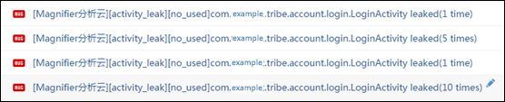memory-leak-dialog/memory-leak-dialog
登录页面出现内存泄漏？？！！楼主的代码是如此的完美而无懈可击，这么可能出现这么多泄漏的问题？分析云测漏的工具有问题吧！？
插播什么是 Activity 泄漏：Android 中 Activity 代表一个页面，拥有一段生命周期，生命周期结束后，Activity 对象应当在之后某个合适的时机被 VM 回收内存。出现了泄漏就意味着 Activity 生命周期结束后，VM 发现 Activity 一直被持有，没有回收这些无用的内存。
按照以往的经验，大部分 Activity 泄漏的原因都是由于 Handler 内部类长时间挂在线程中导致的。而这块我们 App 已经考虑便处理了。究竟是哪泄漏了？
二，WebView导致内存泄漏众所周知
带着怀疑的心态并且为了证明清白，我一个个点进去看了，总共有三条不同的引用链。为了后续说明，这里取了个名字：
- ① AuthDialog 引用链
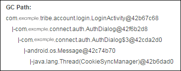
- ② BrowserFrame 引用链
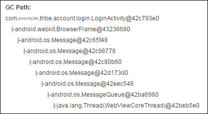
- ③ IClipboradDataPaste 引用链
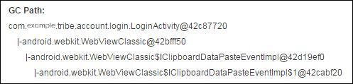
看来这次情况有点不同！由于 Monkey 测试的机型比较少，这里所有的 Bug 都来自一部三星 GT-I9300@android+4.3 手机。
为了快速解决问题，楼主询问了其他同事和 StackOverflow，发现这其中有三个类 CookieSyncManager, WebView, WebViewClassic 已经被很多人提起过，它们会导致内存泄漏！初步有如下的结论如下：
- 1.CookieSyncManager 是个全局静态单例，操作系统内部使用了 App 的 Activity 作为 Context 构造了它的实例。我们应该在 App 启动的时候，抢先帮系统创建这个单例，而且要用 applicationContext，让它不会引用到 Activity。
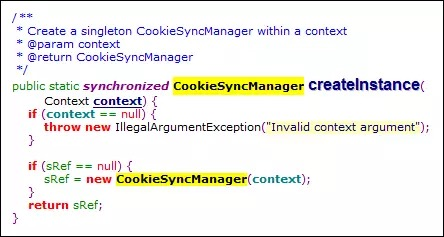
- 2.使用 WebView 的页面（Activity），在生命周期结束页面退出（
onDestory）的时候，需要主动调用WebView.onPause()以及WebView.destory()以便让系统释放 WebView 相关资源。
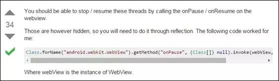
- 3.WebView 内存泄漏是众所周知的，建议另外启动一个进程专门运行 WebView。不要9998，不要9999，我们要100%！WebView 用完之后就把进程杀死，即使泄漏了也无碍。
按照以上的种种结论，我们都认定了这里面就是 WebView 引起的。
但是！我们的应用主进程 LoginActivity 根本没有用到 WebView 啊！！
三. 第三方 jar 包使用 WebView 这可如何是好
根据以上的 AuthDialog 引用链，楼主把目标锁定了某sdk：
翻了一阵子恶心的混淆后的代码，找到下面这么一段。SDK 确实创建了 WebView 实例，并且用的是客户程序的 Activity 对象作为 WebView 的 Context 如下：
c 跟 j 都是 SDK 中继承于 WebView 的一个子类，k 是登录接口的输入参数 Activity。这里创建了 c 对象之后向上塑形赋给了 j 。
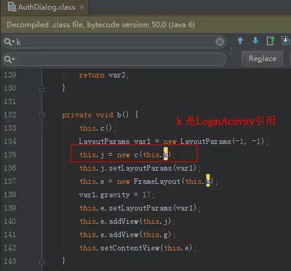
网上已经有很多例子表明，直接用 Activity 作为参数构建 WebView 就非常有可能导致 Activity 泄漏。
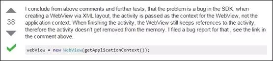
不过也看到了代码中，有调用了 WebView 的destory()方法释放资源。但是这里似乎无法保证dismiss()一定会被执行。
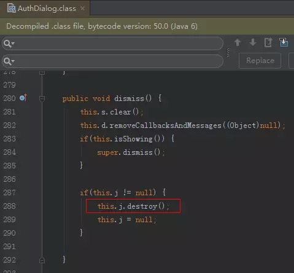
问题到这里发现比较麻烦了，SDK 对我们来说是第三方包，我们没法让第三方包不用 WebView，或者让第三方包把 WebView 放在另外一个进程中运行啊！于是，在 App 上面做规避暂时不好实现。于是找了 SDK 的童鞋一起分析了。
最终，大家都有了一个初步的共识，在 Android4.3 以下的旧版本，使用 Activity 对象创建 WebView，确实有可能导致内存泄漏。非常高兴能得到 SDK 童鞋的大力支持，一起分析，问题到这里有了初步的进展。
四. 心结未解，翻看WebView源码了解根源
不过，问题到这里楼主心理还是有个很严重的疑惑没有解开（是什么疑惑呢？）。于是拿了 Android4.3 的源码又翻了一遍希望找寻这里头的根本原因，做了一点记录，针对 WebView 在 Java 层的结构画了一个不严谨的类图：源码来源：http://androidxref.com/4.3_r2.1/
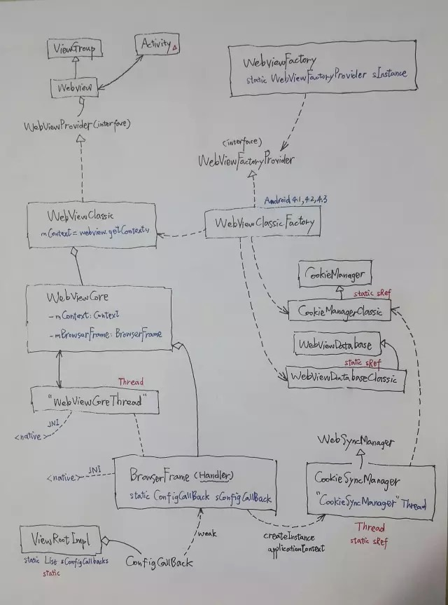
大概情况是这样：WebView 这套结构中，有一个工厂类 WebViewFactory 提供静态方法。
Android4.3(JellyBean) 版本通过 WebViewFactory 工厂类创建了一个全局单例对象 WebViewClassic$Factory，然后使用这个 Factory 创建了一整套实现的代码(XXXClassic)：WebViewClassic, CookieManagserClassic, WebViewDatabaseClassic。
WebViewClassic 才是真正地实现 WebView 的各种 API。WebViewClassic 创建并维护了 WebViewCore 对象。
WebViewCore 创建了一个子线程“WebViewCoreThread”，这里是一个全局的单例的而且一旦启动就不会停止的 Thread！WebViewCore 会在这个子线程中创建维护并调用 BrowserFrame 的方法。
BrowserFrame 本身是一个属于“WebViewCoreThread”线程的 Handler 子类。BrowserFrame 会被 native(c++) 层调用，然后将这些调用切换到“WebViewCoreThread”线程中去执行，比如刷新进度或者处理屏幕旋转事件等等。
BrowserFrame 还会调用 CookieSyncManager.createIntance()，这也是系统框架中唯一一处调用的地方！
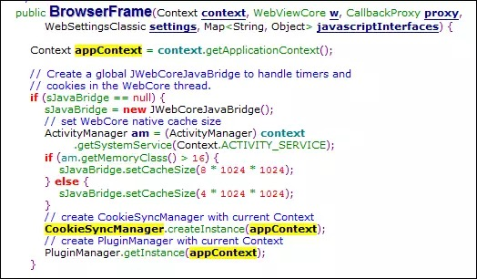
看到这里之后，楼主发现以上所说的，提前帮系统调用
CookieSyncManager.createInstance(contenxt.getApplicationContext()) 可能是没有效果的，因为系统本来就是这么做的。手机厂商修改这里的可能性不大。
CookieSyncManager 又是什么东西？同样的，它自己也创建一个子线程，线程名就叫“CookieSyncManager”，又是全局单例不会停！这个线程每过5分钟就会把缓存在内存中的 Cookie 进行持久化 syncFromRamToFlash()。
这里我们比较关心为什么 Activity 会泄漏，所以关键看看哪些类对象中持有了 Activity(Context) 引用：WebViewClassic, WebViewCore, BrowserFrame。
这套结构中有很多静态单例，还有子线程，想想也挺恶心的。而且三个关键的类都持有 Activity 引用。不过我们发现，其实 WebViewClassic, WebViewCore 这两个个对象跟 WebView 对象的生命周期是一致的，Activity 销毁于是 WebView 销毁了，WebView 销毁了另外两个对象也跟着销毁。烟消云散。。。
留下两个孤独的子线程还在跑，还有全局静态的钉子户对象。
但是！BrowserFrame 本身是 Handler，假如它因为 native 层的调用往”WebViewCoreThread”挂了一个消息，那么便可以建立一条引用链：
Thread->MessageQueue->Message->Handler(BrowserFrame)->Activity
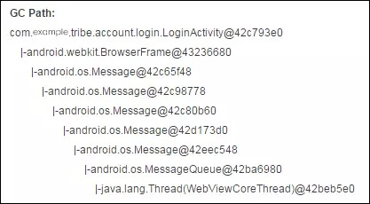
好了，楼主的疑惑是什么？
五. 最后的疑惑
我们再来看看 AuthDialog 的引用链。

换成 MAT 看会比较清晰：
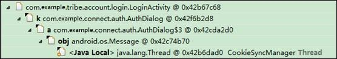
楼主发现，这里 CookieSyncManager 线程，居然直接引用了 Message 对象！这是什么鬼？一般情况下，HandlerThread 持有一个 MessageQueue 对象，MessageQueue 才持有 Message 队列。
Java Local : A local variable. For example, input parameters, or locally created objects of methods that are still in the stack of a thread. Native stack. Input or output parameters in native code, for example user-defined JNI code or JVM internal code. Many methods have native parts, and the objects that are handled as method parameters become garbage collection roots. For example, parameters used for file, network, I/O, or reflection operations.
这里表明，CookieSyncManager 线程中存在某个 Message 的局部变量，而由于线程一直没有结束，所以局部变量一直没有被释放。而这个 Message.obj 成员引用了 AuthDialog$3 对象。
这是一个内部类，楼主发现内部类混淆之后的命名规则就是：第几个出现就命名为几。
AuthDialog 里面有很多内部类：
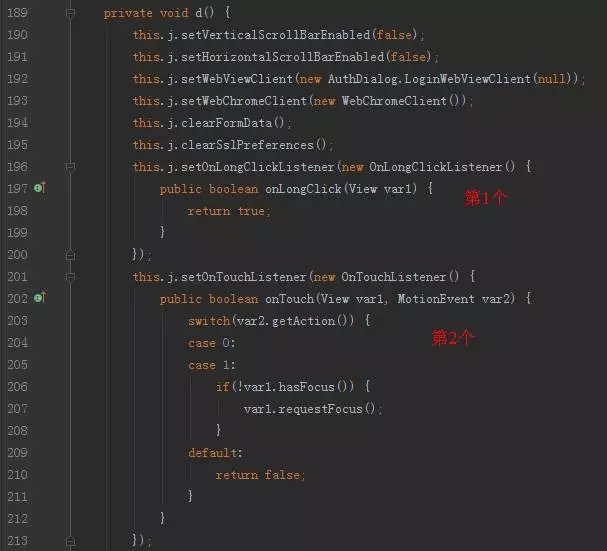
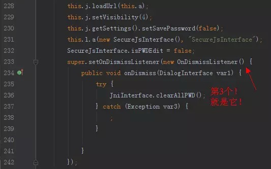
如上图，MAT 中的引用链中的 AuthDialog$3 指的就是这里的 OnDismissListener 匿名内部类！接着我们来看看 Dialog.setOnDismissListener 里面做了什么勾搭：
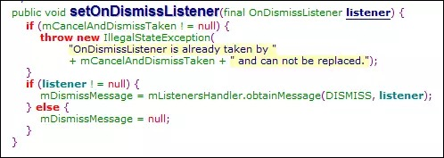
纳尼！OnDismissListener 居然被赋给了 Message.obj 成员！
于是，我们心中生成的一条引用链是这样的：
Thread(main) -> MessageQueue->Message -> obj(OnDismissListener) -> AuthDialog -> Activity
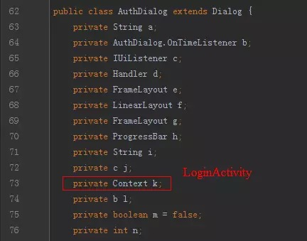
可是不对啊，我们所能找到的引用链跟 CookieSyncManager 子线程一点关系都没有！
再对比一下：
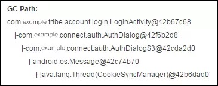
子线程 CookieSyncManager 拿到了主线程的 Message！！ Oh no !! 这是什么情况？？？这个 Message 被某处地方错误引用了？子线程通过 JNI 在 native 中拿到 Java 层的对象？
好吧，楼主承认研究了一个晚上没有任何进展。。。
六. 原来是它！—Dialog
注：以下的分析感悟来自Github上面的一篇文章：《一个内存泄漏引发的血案》
这里简要说明一下，作者的结论是：在 Android Lollipop 之前使用 AlertDialog 可能会导致内存泄漏！
作者发现，局部变量的生命周期在 Dalvik VM 跟 ART/JVM 中有区别。在 DVM 中，假如线程死循环或者阻塞，那么线程栈帧中的局部变量假如没有被置为 null，那么就不会被回收。
如下代码使用阻塞队列说明问题：
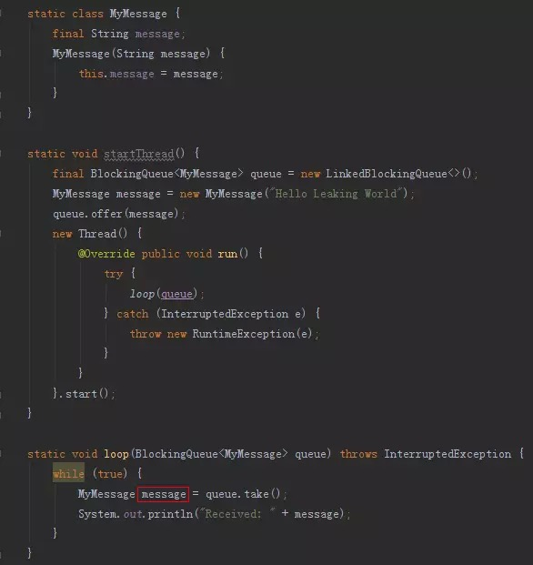
子线程中调用 loop()死循环，不停地从阻塞队列中取出一个 MyMessage 对象并且将对象的引用赋值给局部变量 message，一次 while 循环之后，虚拟机应当结束 while 花括号中的局部变量的生命周期，并且释放对应的堆内存中的 MyMessage 对象。可是，DVM 没有这么做！！
在 VM 中，每一个栈帧都是本地变量的集合，而垃圾回收器是保守的：只要存在一个存活的引用，就不会回收它。在每次循环结束后，本地变量不再可访问，然而本地变量仍持有对 Message 的引用，interpreter/JIT 理论上应该在本地变量不可访问时将其引用置为 null，然而它们并没有这样做，引用仍然存活，而且不会被置为 null，使得它不会被回收！！
这种场景不就是 Android Handler 消息机制的处理方式么？！
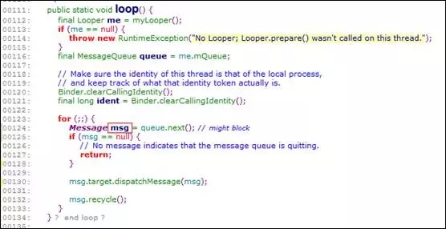
Looper 不停地从阻塞队列 MessageQueue 中取出下一条消息 Message 并将引用赋给本地变量 msg。一旦一次循环结束了，msg 没有被置为 null，对应的 Message 对象没有被回收，于是就泄漏了。
不过，Message 是自带回收机制的，而且任何线程共用，从上面源码可以看到，每个 Message 被 Handler 处理完之后都会 recycle()，置空所有的成员变量，并且放到回收池中。
好了，被 CookieSyncManager 子线程的 Looper 轮过一次的 Message 对象也跟其他人一样，被回收并放在了回收池中。这个时候，刚好遇到了 Dialog！！

这家伙刚刚好通过 obtainMessage()从回收池中拿到了这个 Message（被 CookieSyncManager 线程的本地变量引用住了），而且Message.obj 变量就是 OnDismissListener。
拿到之后，Dialog 居然据为己有！！作为一个成员宠爱着！
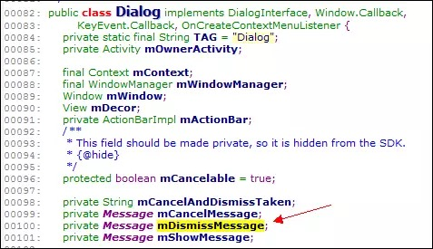
Dialog 自从拥有了 mDismissMessage 对象之后就不会让它挂到消息队列中了，每次要用都是拷贝一份而已。Message.obtain(mDismissMessage)，所以这个 Message 再也不会回到回收池中，直到 Dialog 被销毁，mDismissMessage 变量也被置为 null 了。
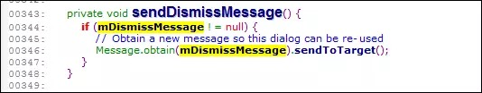
但是，这个 Message 依然占据着堆内存，而且被一个“游离”着的子线程局部变量 msg 引用着！！于是有了这条引用链：
Thread(CookieSyncManager) -> Message -> AuthDialog$3(OnDismissListener) -> AuthDialog -> Activity
七. 总结一些注意点
针对 Android4.3 及以下版本，或者使用 DVM 的 Android 版本
- 使用 WebView 的时候，需要注意确保调用 destroy()
- 考虑是否使用 applicationContext()来构建 WebView 实例
- 调用 Dialog 设置 OnShowListener、OnDismissListener、OnCancelListener 的时候，注意内部类是否泄漏 Activity 对象
- 尽量不要自己持有 Message 对象.